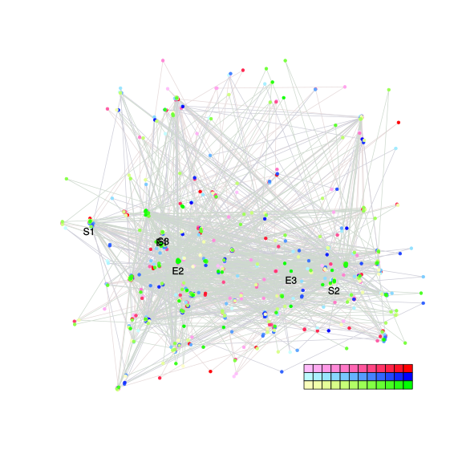

| chain # | burnin | subsample | Iterations (remaining) | command line | subdirectory | directory |
|---|---|---|---|---|---|---|
| 1 | 10000 | 1 | 90000 | bali-phy E7_AA_red3_v2_BetaGamma_Lambda.fas -s 46266 -n BetaGamma_Lambda_c1 | BetaGamma_Lambda_c1-1 | /home/willemse/data/trees/BAli-Phy/red3_v2/E7 |
| 2 | 10000 | 1 | 90000 | bali-phy E7_AA_red3_v2_BetaGamma_Lambda.fas -s 92825 -n BetaGamma_Lambda_c2 | BetaGamma_Lambda_c2-1 | /home/willemse/data/trees/BAli-Phy/red3_v2/E7 |
| 3 | 10000 | 1 | 90000 | bali-phy E7_AA_red3_v2_BetaGamma_Lambda.fas -s 64412 -n BetaGamma_Lambda_c3 | BetaGamma_Lambda_c3-1 | /home/willemse/data/trees/BAli-Phy/red3_v2/E7 |
| P(data|M) = -2368.698 +- 0.240 | Complete sample: 5068 topologies | 95% Bayesian credible interval: 1239 topologies |
Phylogeny Distribution

| Partition support: Summary |
| Partition support graph: SVG |
{kind=link}
| 50% consensus | Newick (+PP) | SVG | |||||
| 66% consensus | Newick (+PP) | SVG | |||||
| 80% consensus | Newick (+PP) | SVG | |||||
| 90% consensus | Newick (+PP) | SVG | |||||
| 95% consensus | Newick (+PP) | SVG | |||||
| 99% consensus | Newick (+PP) | SVG | |||||
| 100% consensus | Newick (+PP) | SVG | |||||
| MAP | Newick (+PP) | SVG | |||||
| greedy | Newick (+PP) | SVG |
{kind=link}
{kind=link}
{kind=link}
{kind=link}
{kind=link}
{kind=link}
{kind=link}
{kind=link}
Alignment Distribution
Partition 1
| Diff | Min. %identity | # Sites | Constant | Informative | ||||
|---|---|---|---|---|---|---|---|---|
| Initial | FASTA | HTML | Diff | 3.09% | 109 | 1 (0.917%) | 88 (80.7%) | |
| Best (WPD) | FASTA | HTML | AU | 10.7% | 166 | 6 (3.61%) | 87 (52.4%) |

Mixing
{kind=link}
| burnin (scalar) | ESS (scalar) | ESS (partition) | ASDSF | MSDSF | PSRF-CI80% | PSRF-RCF |
|---|---|---|---|---|---|---|
| 583 | 7925 | 3420.566 | 0.007 | 0.021 | 1.001 | 1.006 |
Projection of RF distances for the first 3 chains3D | Variation of split PPs across chains |
Scalar variables
| Statistic | Median | 95% BCI | ACT | ESS | burnin | PSRF-CI80% | PSRF-RCF |
|---|---|---|---|---|---|---|---|
| prior | -289.1 | (-333.6, -250.5) | 24.24 | 11140 | 336 | 1 | 0.9997 |
| prior_A1 | -294.5 | (-337.1, -258.7) | 16.52 | 16340 | 161 | 1 | 0.9979 |
| likelihood | -2346 | (-2368, -2325) | 14.14 | 19094 | 317 | 1 | 1.002 |
| logp | -2636 | (-2677, -2600) | 25.63 | 10535 | 236 | 1 | 0.9993 |
| Heat.beta | 1 | ||||||
| Scale1 | 6.398 | (3.692, 10.12) | 1.039 | 259795 | 183 | 0.9999 | 1.002 |
| S1.F.pi.A | 0.06385 | (0.04691, 0.08265) | 7.525 | 35879 | 324 | 1 | 0.9973 |
| S1.F.pi.R | 0.06693 | (0.04643, 0.08921) | 8.918 | 30276 | 280 | 1 | 0.996 |
| S1.F.pi.N | 0.02821 | (0.01682, 0.04118) | 7.958 | 33929 | 522 | 1 | 1.001 |
| S1.F.pi.D | 0.05064 | (0.03513, 0.0687) | 8.915 | 30284 | 296 | 1 | 0.9986 |
| S1.F.pi.C | 0.04018 | (0.02329, 0.05996) | 8.524 | 31674 | 328 | 0.9998 | 1.002 |
| S1.F.pi.Q | 0.04939 | (0.03555, 0.06481) | 8.146 | 33147 | 583 | 0.9999 | 0.9988 |
| S1.F.pi.E | 0.07939 | (0.05871, 0.1023) | 9.201 | 29346 | 369 | 0.9998 | 1.001 |
| S1.F.pi.G | 0.08646 | (0.06118, 0.1143) | 8.631 | 31282 | 372 | 0.9999 | 0.9985 |
| S1.F.pi.H | 0.02625 | (0.01503, 0.03942) | 7.989 | 33796 | 544 | 0.9999 | 1.001 |
| S1.F.pi.I | 0.04997 | (0.03464, 0.06638) | 9.086 | 29715 | 284 | 1 | 0.9988 |
| S1.F.pi.L | 0.1047 | (0.07947, 0.1318) | 8.244 | 32753 | 294 | 1 | 1 |
| S1.F.pi.K | 0.03121 | (0.02013, 0.04409) | 7.927 | 34063 | 275 | 0.9999 | 1.002 |
| S1.F.pi.M | 0.005317 | (0.001346, 0.01073) | 8.548 | 31587 | 375 | 1 | 1.005 |
| S1.F.pi.F | 0.03233 | (0.01871, 0.04832) | 8.468 | 31884 | 349 | 1 | 0.9928 |
| S1.F.pi.P | 0.04609 | (0.02888, 0.06614) | 8.551 | 31575 | 407 | 1.001 | 1.005 |
| S1.F.pi.S | 0.06996 | (0.05149, 0.08934) | 8.716 | 30976 | 466 | 0.9997 | 1.001 |
| S1.F.pi.T | 0.05785 | (0.04067, 0.07667) | 8.039 | 33585 | 359 | 1 | 1.001 |
| S1.F.pi.W | 0.001432 | (6.647e-08, 0.006163) | 12.52 | 21573 | 523 | 1 | 1.003 |
| S1.F.pi.Y | 0.02993 | (0.01668, 0.04535) | 8.18 | 33009 | 451 | 1 | 1.005 |
| S1.F.pi.V | 0.07014 | (0.05154, 0.09051) | 8.852 | 30503 | 326 | 0.9999 | 1.006 |
| I1.RS07.meanIndelLengthMinus1 | 1.505 | (0.8743, 2.301) | 7.009 | 38522 | 108 | 1 | 0.9986 |
| I1.RS07.logLambda | -3.558 | (-3.962, -3.167) | 4.449 | 60682 | 118 | 1 | 1 |
| |A1| | 153 | (143, 164) | 34.07 | 7924 | 99 | 0.878 | 1.005 |
| #indels1 | 42 | (35, 50) | 14.96 | 18051 | 234 | 0.9 | 0.9994 |
| |indels1| | 106 | (88, 128) | 13.26 | 20369 | 187 | 0.963 | 1.001 |
| #substs1 | 451 | (436, 461) | 17.05 | 15832 | 87 | 0.9375 | 1.002 |
| Scale1*|T| | 7.908 | (6.978, 8.915) | 4.635 | 58251 | 112 | 1 | 0.9988 |
| |A| | 153 | (143, 164) | 34.07 | 7924 | 99 | 0.878 | 1.005 |
| #indels | 42 | (35, 50) | 14.96 | 18051 | 234 | 0.9 | 0.9994 |
| |indels| | 106 | (88, 128) | 13.26 | 20369 | 187 | 0.963 | 1.001 |
| #substs | 451 | (436, 461) | 17.05 | 15832 | 87 | 0.9375 | 1.002 |
| |T| | 1.237 | (0.7009, 1.893) | 1.009 | 267504 | 183 | 0.9999 | 1.001 |